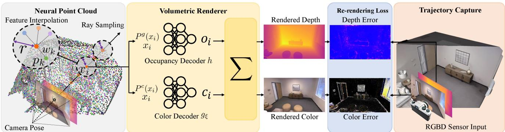

这张图在画什么：一张深度图如何「长」出一团神经点云。 怎么看这张图：① 左上是输入深度图（像素网格）；② 中间从相机出发，每条射线在深度 D 附近钉几个小点（紫点）；③ 右侧这些点密集铺开，形成一面点云墙；④ 红点是「砖缝/边缘」这类高频处——因为点云密度随图像梯度自适应，这些地方点更密。这就是「从深度图长点」的过程。 要记住的一句话：点不是预先铺好的，是边看边长、只往没记录的地方补。

原图注（Fig. 2）：Point-SLAM Architecture. Given an estimated camera pose, mapping is performed as follows. We first add a sparse set of neural points to the neural point cloud, and then render depth and color images via volume rendering along the ray … 怎么看这张图：这是唯一把「加点的判据 + 邻域加权聚合 + 双解码器」画全的图。重点看左边「add neural points」那一步——它决定点长在哪、长多少，正是上一节自绘图的理论原版。
原图注（Fig. 1）：Point-SLAM Benefits. Due to the spatially adaptive anchoring of neural features, Point-SLAM can encode high-frequency details more effectively than NICE-SLAM … 怎么看这张图：上排是锚点分布——NICE 的规则网格（均匀）vs Point-SLAM 随深度/梯度疏密；下排是渲染差异，花瓶、百叶、地板、地毯这类高频细节 Point-SLAM 明显更真。这就是「特征跟着数据走」带来的直接收益。
4. 一个必须诚实处理的点：回环 / 变形是前瞻框架，非本文结论
诚实的边界声明
精读材料明确指出：「『点基表示天然对回环/变形友好』是前瞻性框架，正文未证。」Point-SLAM 全文只在 related work 提及他人「incorporated loop closures」，自己明确不做回环（方法/实验均未涉及），也未讨论变形。所谓「点对回环/变形友好」是面向下一组 PIN-SLAM 的前瞻推断，不是本文论断。
所以写课必须按这个口径：
点表示带来的已被证实的好处是：数据自适应密度、高频细节更真、内存有底（搜索半径上限 \(r_u=8\) cm 触底，见 Fig. 6）；
原图注（Fig. 3）：Reconstruction Performance on Replica. Our method is able to outperform all existing methods … note the fidelity of the rough carpet reconstruction on Office 0. 怎么看这张图：左 (a) 是 F1 分数对比，Point-SLAM 高居第一；右 (b) 是 Office 0 里粗糙地毯这类高频细节的重建对照，别人糊成一团、它保住了纹理。这是「点表示已被证实的好处」的量化证据，但请记住：图里没有任何关于回环/变形的内容。